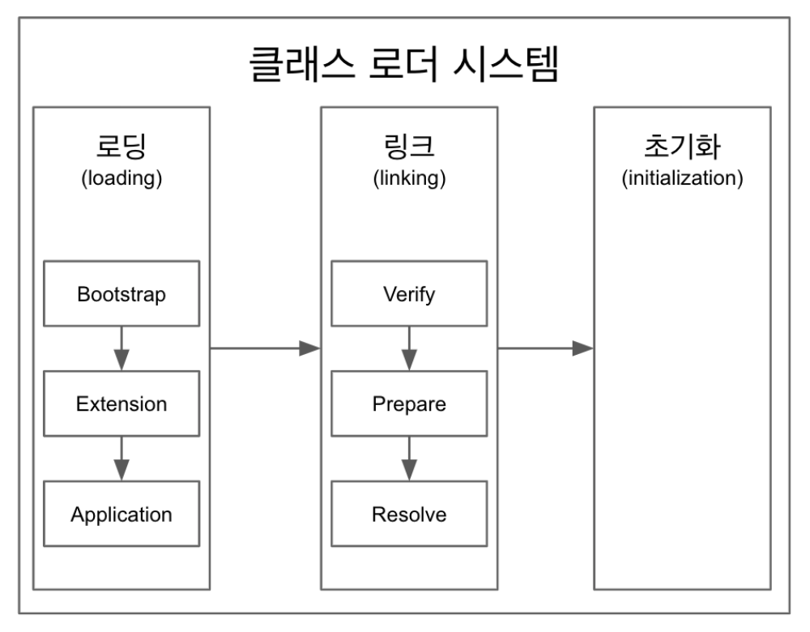

[JVM] JVM 총정리 - 클래스 로더(1)
JVM 은 사용자 컴퓨터 운영체제에 맞는 JRE 에 포함되어 있는 소프트웨어로, 바이트 코드로 변환된 자바 코드를 실행시켜주는 역할을 한다. 또한 자바 프로그램을 실행함에 있어 .class 파일에 대한 유효성 검사와 메모리 관리, GC 등의 작업을 수행하기 때문에 매우 중요한 소프트웨어라고 할 수 있다.
먼저 JVM 내부 구조를 살펴보자.
1. JVM 내부구조
JVM 은 크게 다음과 같이 이루어져 있다.
- 클래스 로더 (class loader)
- 실행 엔진 (execution engine)
- 인터프리터 (interpreter)
- JIT Compiler
- 가비지 콜렉터 (garbage collector)
- 런타임 영역 (runtime data area)
이것을 그림으로 표현하면 다음과 같다.
2. 클래스 로더 (Class Loader)
클래스 로더는 런타임 환경에서 동적으로 .class 파일을 읽어 런타임 영역 (Runtime Data Area) 에 적재한다. 뿐만 아니라 클래스 파일이 유효한지 검증하고, 필드 및 메서드를 초기화 하는 역할을 하는 매우 중요한 부분이다. 클래스 로더는 위 역할을 수행하기 위해 크게 세 가지 과정을 거쳐 동작하는데 그림으로 표현하자면 다음과 같다. 
2-1. 로딩 (Loading)
로딩 단계는 JVM 이 런타임 환경에서 필요한 클래스 파일을 찾아 탑재하는 과정을 말한다. 이 동작은 각각의 클래스 파일들이 JDK 에 의해 기본적으로 제공받는 클래스 파일인지 혹은 개발자가 정의한 클래스 파일인지와 같은 기준에 의해
세 가지 Class Loader 로 나뉘어 실행된다.
2-1-1. Bootstrap Class Loader
JVM 이 시작되고 가장 최초로 실행되는 최상위 Class Loader 이다. Bootstrap Class Loader 는 JDK 8 기준으로 jre/lib/rt.jar 파일에 위치한 자바 런타임 코어 클래스들을 로드한다. 런타임 코어 클래스들에는 java.lang, java.util 등과 같은
필수 패키지들이 들어있다.
Bootstrap Class Loader 는 가장 상위의 Class Loader 이므로 다른 Clas Loader 와 다르게 탑재되는 운영체제에 맞게 Native Code 로 쓰여있다.
2-1-2. Extensions Class Loader
Bootstrap Class Loader 다음으로 우선순위를 가지는 Class Loader 이다. 주로 jre/lib/ext 디렉토리나 java.ext.dirs 환경 변수로 지정한 디렉토리 안에 있는 클래스 파일들을 로딩하며 JDK 확장 라이브러리들을 다룬다.
2-1-3. Application Class Loader
자바 프로그램 실행 시 classpath 에 있는 클래스 혹은 jar 에 속한 클래스들을 로드한다. 주로 개발자들이 작성한 자바 코드 클래스 파일들을 탑재하는 역할을 하고 있다.
JDK 9 버전 이후 변경점
JDK 9 버전 이후 JDK 에 module 개념이 새롭게 탑재되며 기존 jre, ext 디렉토리 등이 삭제되고 해당 기능들은 작은 단위의 모듈로 분리되게 되었다. 이로 인해 자바 프로그램이 전체 JDK 를 실행하지 않아 더 효율적인 포맷으로 진화하였다. 또한 이러한 변경점으로 인해 주요 Class Loader 들의 주요 기능이나 명칭도 변경되었다. 아래는 JDK 9 버전 이후의 변경점이다.
1. Bootstrap Class Loader
기존에는 모든 Java SE 클래스들을 로드할 수 있었지만, rt.jar 가 모듈화되어 작은 단위로 나뉘어지면서 java.base 같은 중요한 모듈의 클래스 로딩만 다루게 역할이 축소되었다.
2. Platform Class Loader
Extensions Class Loader 에서 명칭이 변경되었다. Java SE 플랫폼에 있는 모든 클래스들에 대해 로더 역할을 수행할 수 있게 확장되었으며 Java SE 플랫폼에 속해있지 않은 표준화된 JCP(Java Community Process) 클래스에 대해서도 로더 역할을 할 수 있게 변경되었다.
3. System Class Loader
Application Class Loader 에서 명칭이 변경되었다. Java SE 나 모듈이 아닌 모듈들에 대해서도 default 로더 역할을 수행할 수 있게 변경되었다.
자세한 변경사항은 다음
Loading 동작 방식
Class Loader 는 다음과 같은 위임 방식으로 클래스들을 로딩한다.
System Class Loader -> Platform Class Loader -> Bootstrap Class Loader
요청한 클래스가 위와 같은 위임 과정을 거쳐 Class Loader 에 의해 로드가 되지 않는다면 java.lang.ClassNotFoundException 이 발생하겟지만, 로드에 성공한다면 내용에 맞는 바이너리 데이터를 생성한 뒤 메모리의 Method Area 에 저장한다. 그 후 Class<객체이름> 형태의 해당 클래스 타입의 class 객체를 생성해 Heap 영역에 저정하게 된다.
2-2. 링킹 (Linking)
이 단계에서는 로드된 클래스나 인터페이스, 필요한 경우 요소 타입을 검증하고 사용할 수 있게 준비하는 과정을 포함한다. 이 작업은 Verification, Preparation, Resolution 이라는 세 단계로 이루어진다.
1) 검증 (Verification)
클래스 로더가 .class 파일의 바이트코드를 자바 언어 명세서 (Java Language Specification) 에 따라서 코드를 제대로 작성했는지, JVM 규격에 맞게 검증된 컴파일러에서 .class 파일이 생성되었는지 등을 확인하여 .class 파일의 정확성을 보장해준다.
내부적으로 바이트 코드 검증기가 이 과정을 담당하며 만약 검증이 실패한다면 java.lang.VerifyError 를 발생시킨다. 다만, Bootstrap ClassLoader 에 의해 로드된 클래스들은 신뢰성이 높은 자원에서 로드된 클래스들이기 때문에 해당 Verification 단계를 거치지 않는다.
이러한 Verification 은 사실 컴파일 단계에서도 수행이 된다. 하지만 JVM 에서 다시 한 번 이 검증을 거치게 되면서 클래스 파일의 악의적인 혹은 유효하지 않는 변경을 미연에 방지할 수 있게 된다.
2) 준비 (Preparation)
이 단계에서는 static fields 에 대한 메모리를 할당한다. 다만, 주어진 값으로 초기화는 나중에 진행될 Initializa 단계에서 실행되면 이 단계에서는 타입의 기본 값으로 초기화가 진행된다. 때문에 이 단계에서 클래스 파일의 코드를 작동시키진 않는다.
만약, 이 단계에서 할당할 메모리 공간이 부족하다면 OutOfMemoryError 가 발생한다.
3) 해석 (Resolutions)
해석 단계는 해당 클래스의 참조된 클래스들을 로드하는 과정이다. 이 과정은 Linking 의 Preparation 단계에서 수행될 수도 있고, Initialization 단계 이후 수행될 수도 있다.
Linking 작업은 필요할 때마다 동적으로 이루어지기 때문에 Dynamic Linking 이라는 표현을 사용하기도 한다.
사실 .class 파일은 실행 시 Link 될 수 있도록 Symbolic Reference 만을 가지고 있다. 이 Symblic Reference 는 해석 단계에서 Method Area 의 Runtime Constant Pool 을 거쳐 실제로 존재하는 물리적인 주소로 대체되게 된다. 이러한 과정의 Dynamic Linking 덕분에 class 파일의
크기를 작게 유지할 수 있어 메모리 요구사항이 훨씬 적어지게 된다.
2-3. 초기화 (Initialization)
이 과정에서는 로드된 각 클래스나 인터페이스의 코드를 읽고 초기화 로직이 실행되게 된다. static 변수와 메서드가 코드에 명시된 원래 값으로 할당이 되고, 정적 초기화 블록이 실행되게 된다. 이 작업은 클래스의 위에서 아래로, 클래스 계층 구조에서 부모부터 자식까지 한 줄씩 진행된다.
초기화 과정까지 거쳐 클래스 탑재 과정이 끝나게 된다면 본격적으로 JVM 에서 클래스 파일을 구동시킬 준비가 끝나게 된다.